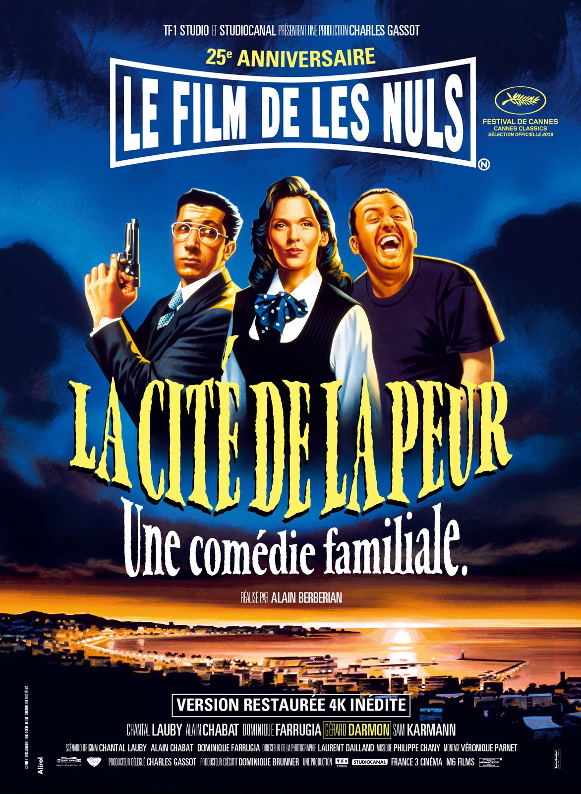

La citée de la peur
Acteurs
Synopsis
De nos jours, à Cannes, pendant le Festival. Pas facile pour Odile Deray, petite attachée de presse de cinéma, de faire parler de son film "Red is Dead". Il faut avouer qu'il s'agit d'un film d'horreur de série Z, un petit budget aux acteurs improbables. Pourtant un jour, la chance sourit à Odile : un tueur commet des meurtres exactement de la même manière que dans "Red is Dead", l'occasion est trop belle : de vrais meurtres, comme dans son film, en plein Festival de Cannes ! Comme publicité, on ne peut pas rêver mieux... Odile fait donc immédiatement venir Simon Jeremi, l'acteur principal de "Red is Dead", un enfant de trente ans un peu simplet. Pour le protéger - et surtout pour la frime - elle engage aussi un garde du corps, Serge Karamazov, plus intéressé par les filles que par sa mission. Dans la fièvre de Cannes, avec un tueur en liberté, un politicien véreux et un commissaire principal obsédé par les médias, Odile, Simon et Kara devront jouer des coudes pour arriver intacts jusqu'aux marches du Grand Palais. Mais même là, ils ne seront pas au bout de leurs péripéties...